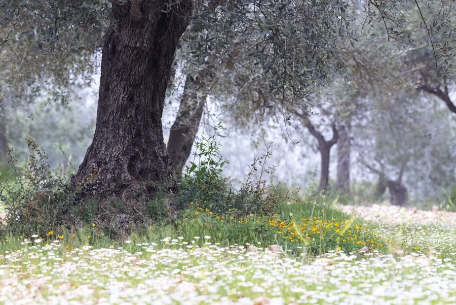
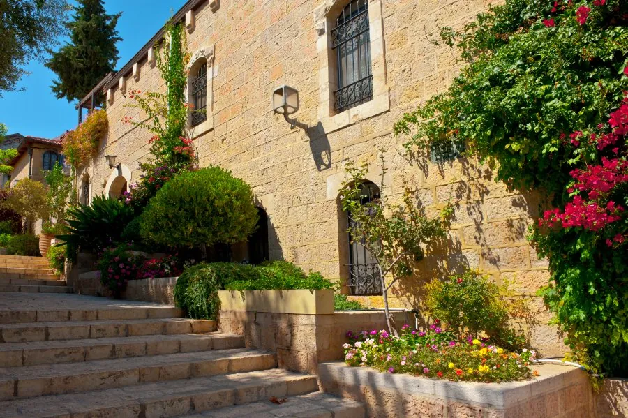

Die erste Omer-Woche: Chesed – Güte von innen nach außen
Sieben Tage, sieben Facetten der Güte. Von Güte in ihrer reinsten Form bis zur Güte, die Würde trägt – eine Reise durch die erste Woche der Omer-Zeit.
Beitrag lesenGedanken zu Israel, Gottes Wort und deinem Alltag.
Sieben Tage, sieben Facetten der Güte. Von Güte in ihrer reinsten Form bis zur Güte, die Würde trägt – eine Reise durch die erste Woche der Omer-Zeit.
Beitrag lesen
Freiheit ist kein Ziel – sie ist ein Anfang. Was Parashat Schemini nach Pessach darüber sagt, was mit unserer Freiheit geschieht, wenn wir sie nicht bewusst füllen.
Beitrag lesenIn 3. Mose 11,42 verbirgt sich der mittlere Buchstabe der gesamten Torah – ein ungewöhnlich großes Waw. Was dieser eine Buchstabe über Verbindung, Heiligkeit und unsere Wahl sagt.
Beitrag lesenMeine Frau saß neben mir in der Warteschlange – und plötzlich sagte sie: „Hamtana... matana. Hörst du das?" Warten und Geschenk. Im Hebräischen liegt das eine buchstäblich im anderen.
Beitrag lesenWer die letzten Kapitel des Buches Schemot liest, dem fällt schnell etwas auf: Derselbe Satz taucht immer und immer wieder auf – „wie der Ewige Mosche geboten hatte." Achtzehn Mal.
Beitrag lesenWer eine Torah-Rolle zum ersten Mal in der Hand hält, ist oft überrascht. Keine Vokale, keine Satzzeichen, nur Konsonanten. Und doch: Manche Buchstaben sind größer als die anderen.
Beitrag lesenWarum komme ich nicht voran – obwohl ich es doch wirklich will? Die Antwort findet sich tiefer, als wir denken.
Beitrag lesenEs gibt Segenssätze, die klingen schön. Und es gibt Segenssätze, die tragen eine ganze Lebensphilosophie in sich.
Beitrag lesenNachdem Jakob gestorben ist, kehrt die Angst bei Josefs Brüdern zurück. Ist eine Versöhnung wirklich echt – oder nur eine Pause?
Beitrag lesenJosef und seine Brüder finden wieder zueinander. Doch warum spielt Josef dieses Spiel? Warum gibt er sich nicht direkt zu erkennen?
Beitrag lesen
Benjamin verlor seinen Bruder Josef. Wie er damit umging, lässt sich an einer ungewöhnlichen Stelle entdecken: in einer Namensliste.
Beitrag lesenSara lacht. Still, bei sich. Das Lachen eines Menschen zwischen Glauben und Enttäuschung. Was Gott mit diesem Lachen macht, ist eine der schönsten Lektionen der ganzen Bibel.
Beitrag lesen
Ein alter, blinder Isaak. Zwei Söhne. Eine Mutter, die einen Plan schmiedet. Warum tut Rebekka das – und warum ist am Ende nur Esau wütend?
Beitrag lesenGott gibt Abraham eine unglaubliche Verheißung. Und dann passiert – 25 Jahre lang – scheinbar nichts. Warum tut er das?
Beitrag lesenJosef wird verraten, als Sklave verkauft, zu Unrecht ins Gefängnis geworfen. Was sich wie ein Absturz anfühlt, ist in Wahrheit eine Vorbereitung.
Beitrag lesenWarum schafft es Juda, Jakobs Vertrauen zu gewinnen – während Ruben scheitert? Manchmal entstehen aus unseren schwersten Erfahrungen unsere wichtigsten Aufgaben.
Beitrag lesenJosef sitzt im Gefängnis. Alles scheint verloren. Und dann fragt er zwei Mitgefangene: „Warum seid ihr heute so traurig?" Es ist dieser kleine Moment, der alles verändert.
Beitrag lesenZu dieser Parascha gibt es noch keinen Beitrag.